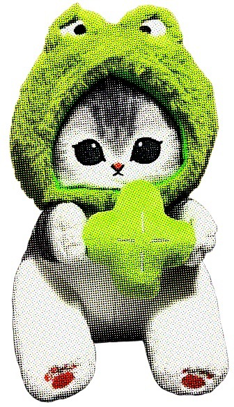
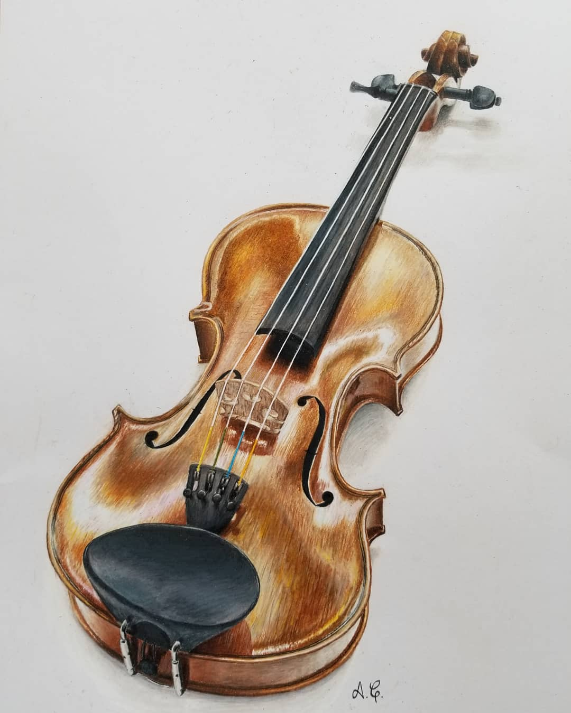

Reflection: Best Practices for Form Design
When reading this article, I immediately resonated with the points brought up from the user’s perspective. I can easily recall many instances where I abandoned forms for many of the exact reasons listed in the article. It was surprising to me how many possible issues pop up in the context of forms, because I had never put much thought into them.
From a designer’s perspective, the visual depictions of each issue with the do/don’t images was very helpful in understanding how to approach forms as a designer. One point that stood out to me was the suggested specificity of error messages. Oftentimes, the underlying code does not support high specificity, and so it may be impossible for a designer to change this without changing the backend. Regardless, I will be consulting the article as a checklist when putting together my own forms.
This website, FreeTaxUA, is a prime example of a form that I find usable. When the user clicks start 2024 return, the form is broken down into many separate pages which make it less overwhelming. The full form pages are visible upon login or account creation.
Reflection: Overlays
When reading the article Overuse of Overlays: How to Avoid Misusing Lightboxes, I appreciated the author not only acknowledging the potential positive uses of overlays, but also providing basic guidelines to help differentiate what one should and shouldn’t do, as well as thinking critically about these guidelines. The “Who? What? When? Where? Why?” framework is an easy way to remember the different aspects to keep in mind, and splitting the article into these sections made it easy to follow. The abundance of visual examples was very helpful in understanding the issues brought to light by the author.
As someone who prioritizes responsive design, I was glad to see the point about the dangers of overlays on mobile devices, because this had not occurred to me before. I will be revisiting the article if I consider including an overlay in any of my future designs.
Reflection: Image Interactions within Webpages
The ideas and images in this article are surprisingly generalizable - I found myself equally intrigued by the images as an elementary schooler would be. In a world where attention spans are shortening, taking time to truly look and process visual information is very valuable, and I found it somewhat calming. I also found it very interesting that analyzing images had the potential to impact other academic areas such as incorporating evidence into writing. I am compelled to visit the weekly images and join in on the analysis.
I found this website when browsing through Awwward’s collection of webpages. It appealed to me because of the minimalistic design that allowed me to focus on the main topic: the shirt. The consistent background and use of cut-out figures with the shirt creates coherency between the images, and the contrast of macro shots with wider shots - as well as the zoom on some wider shots - provides more context. I enjoyed the scrolling action of the page, where a continuous scroll allows the “story” to continue uninterrupted. I did not have to search for buttons and other ways to engage, which allowed me to immerse myself more effectively.
Reflection: Visual Thinking Analysis
Naomi's Images
Naomi Harrold shared her images and her idea with me. Below is one of her images. The image depicts a cat plushie with a frog outfit on. It relates to the other images through the frog theme, as they are all objects that relate to cute depictions of frogs in some way. I find the texture of the image interesting, it has a vintage look due to the graininess. I also noticed that many of the items are soft and/or cute, and have similar shades of green.
The most obvious parts of the image are Naomi’s love of frogs and cute collectibles. I find myself wondering how she acquired the different objects, and when her love of frogs began. I think the project would be particularly intriguing if the images were not visible off the bat, and rather had to be revealed in some way. We discussed either showing a doodle of them that expands to the image on hover, or covering them in some way and revealing on click.

© Noami Harrold
My Images
This drawing of my violin is interesting, because it is significant to me for a couple reasons. First, it is a drawing of my violin based on a photo I took of it. Growing up, music and art were big parts of my life, and the drawing bridges those two. Second, by looking at it, one would likely not know that it was my first colored pencil drawing (other than doodles as a young child). I had only worked with a variety of paint and limited pencil work before.
This image relates to the other images because they are all my drawings and/or paintings. My choice of subject matter and focus on portraits as well as sentimental objects is a window into my emotional world and what matters to me.
I could swap some of the images for paintings that relate to my interdisciplinary interests, such as the example above with music and art. Alternatively, I could focus on my love of nature and pick my artworks with stories related to that.

© Amabel Gale
Reflection: Game Design
As someone who recently made a habit of playing Wordle when starting off my day, I was intrigued by this article. I thought it was interesting that the author notes that the game has to be interesting enough to play repeatedly, yet part of its appeal is that it only happens once a day. Personally, though I find it fun, I know it stays that way because I look forward to the next one and also don’t risk losing much time to the game like I could if I were able to play it nonstop. I can also relate to the social component mentioned - though I don’t share it on social media, it’s become a habit for my SO and I to send each other the colored squares showing how we did most mornings.
I liked the story-telling of the article and how it includes the design process, such as scribbling words in a meeting and testing a paper prototype. The challenges that were brought up were surprising and did not cross my mind initially. The article has a full narrative arc, with emotionally charged moments from the idea's conception to the author describing watching people play, which made for a fun read.